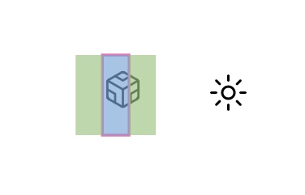
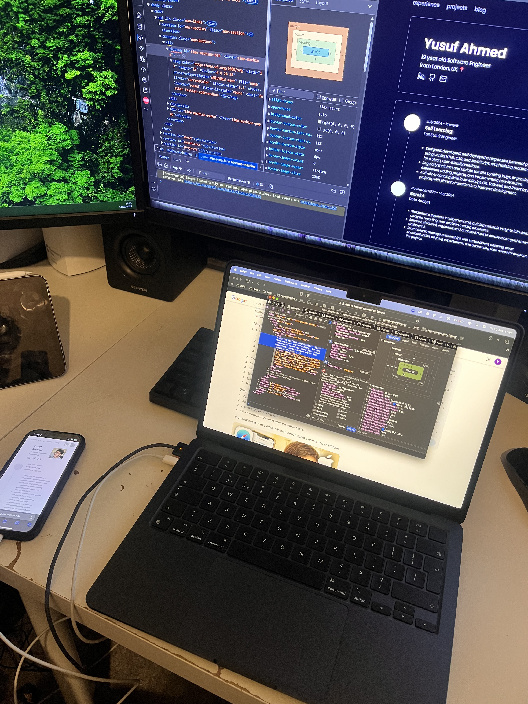
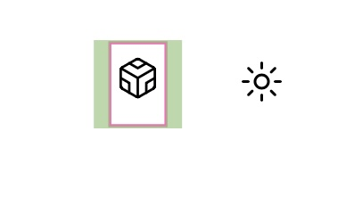

Safari is a weird browser
10th January 2025
Just a disclaimer, I love safari :) Using it is great; I can continue browsing on another device,
it looks the cleanest imo and is optimised the best for Apple devices in general.
However for
web development... it's another story.
The bug
Now the reason I had not really noticed the bug was because it was only apparent on ios devices
using the safari browser, it wasn't even visible on a mac using safari.
Just generally I asked a software engineer to check out my portfolio site and provide me
with some feedback. It was then when he alerted me about this styling issue.

Fixing the bug
Now the most logical thing for me was to see what makes the site on my iPhone so different than the site
on my pc? And this can easily be done with inspect element. However, I had no Idea how to inspect element
on iPhone. A quick google search later, my iPhone was plugged into my macbook and I was looking at the
html and css on my pc and iPhone.

After a few minutes of comparing the elements I found the difference!
The iphone had a different padding for some reason, I guess safari creates its own padding if you do not
specify it.
I added the padding to the css in VScode and done!

Initially I thought this was an svg bug with safari but suprisingly it was
a very simple fix.
Any questions or suggestions please email me!
-Yusuf